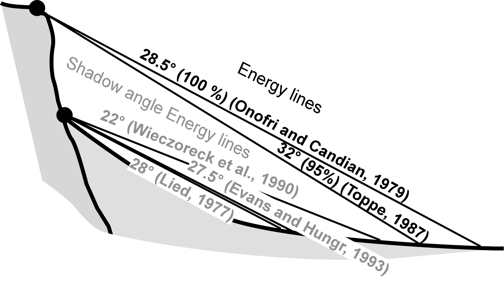

NAME
- r.droka- Draft Rockfall Analysis - An empirical method that identifies the maximum area of invasion of a rockfall.
DESCRIPTION
- The intersection between the topographic profile and the line starting from the point of detachment with a certain angle to the horizontal line defines the point of maximum propagation (Evans and Hungr, 1993; Jaboyedoff and Labiouse, 2003). The angle of inclination (φp) and the line of propagation are defined as zenith angle and shadow zone. This script defines rockfall zones from a digital elevation model (DEM) and vector layer containing starting point or points.
- 
- Energy line used for the cone method from the top or the bottom of a cliff (shadow angle), according to various authors (Image from Jaboyedoff and Labiouse, 2003)
INPUT
- Digital Elevation Model = name
Name of elevation raster map
- Starting points = name
Name of vector map containing rockfall source area. It can be one point or more.
- Shadow angle = integer
Angle of inclination that defines the propagation zone. It's calculated from an horizontal plane starting from source point: highest values determine a lowest propagation.
- Reduction value = double
Reduction moltiplicator for velocity. Default value is 0.9
- Number of boulders = integer
For each starting point can be generated other random points used in the computations. By default points are located in a radius from the starting point equal to: (cell size * number of boulders)/2. Insert 1 for use only the original starting point or points. Note that a high number of boulders can make excessively long the calculation times.
- Rock mass = double
- Output prefix = string
Name of prefix used for output raster maps
- Buffer distance = integer
This value define the radius for randomly generatin boulders starting from starting point. It's in the option dialog window.
OUTPUT
- r.droka generates 5 raster maps and a vector map. The names of all output maps start with the prefix defined by the parameter prefix followed by name of map
- prefix_propagation: raster map rapresenting the area of propagation. If are used multiple source points, each pixel show the percentage of passage (%)
- prefix_vel_max: maximum rock-fall translational velocities (m/sec)
- prefix_vel_med: medium rock-fall translational velocities (m/sec)
- prefix_vel_max: medium kinetic energy (kJ)
- prefix_en_max: maximum kinetic energy (kJ)
- prefix_starting: vector map of starting points
REFERENCES
- FILIPELLO A., GIULIANI A., MANDRONE G. (2010) - Rock Slopes Failure Susceptibility Analysis: From Remote Sensing Measurements to Geographic Information System Raster Modules. American Journal of Environmental Sciences 6 (6): 489-494, 2010 ISSN 1553-345X © 2010 Science Publications.
- JABOYEDOFF M., LABIOUSE V. (2003) - Preliminary assessment of rockfall hazard based on GIS Data. Proceeding of the 10th ISRM Congress, South African Inst. Min. Met., Johannesburg, pp: 575-578
- EVANS, S.G., HUNGR O. (1993). The assessment of rock fall hazard at the base of the talus slope. Can. Geotech. J., 30: 620-636. DOI: 10.1139/t93-054 | © 1993
SEE ALSO
AUTHORS
- Andrea Filipello, University of Turin, Italy - Email
- Daniele Strigaro, University of Milan, Italy - Email